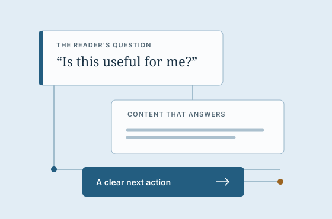

Website making Essay
The missing middle of a useful website
A good-looking page is a beginning. The decisions between an idea and a finished website are what make it useful to someone else.
In this essay
Give the website a job
Imagine a small repair business making its first website. The owner asks for something clean, modern, and professional. Those words describe a feeling. They do not yet tell us what a visitor needs to do.
A visitor might want to know whether the business repairs their type of appliance, whether it serves their neighborhood, and how to request an appointment. The website's job is to help them answer those questions and take the next useful step. That job gives every design decision a place to start.
Write one sentence before choosing a layout: “This website helps this person do this thing.” Keep it specific enough to reject an attractive but irrelevant feature. A gallery may help a furniture maker. A large video may get in the way of an urgent repair request. The same visual treatment cannot carry both jobs equally well.
A useful brief describes the person, the question, and the next action.
Arrange the answers before the components
The repair website needs service details, coverage, opening hours, and an honest request path. If those facts are missing, a polished card grid will not create them. Start with the material you have and name what is still unknown.
Place information in the order a visitor needs it. A service description should explain the problem the owner can handle. The next section can answer a likely concern: availability, process, or cost. An example can make that answer concrete. Navigation lets a reader return to a particular answer without scanning the whole page.
This order is a design choice. It makes the page easier to understand before color or motion does any work. A distinctive typeface can add character, but the content must still tell a visitor where they are and why they should continue.

Choose a visual language that fits
A calm reading site and a lively neighborhood business can both be well designed. They need different rhythms. Long essays benefit from a comfortable line length, clear headings, and generous spacing between thoughts. A short service page may need a stronger contrast between its promise, evidence, and request action.
Look at strong references for a specific reason. Study how a publication handles a long title, how a guide distinguishes steps from warnings, or how a service page shows scope. Then adapt the principle to your own content. Copying a screenshot can reproduce its surface while losing the decisions that made it work.
Use a small set of choices consistently. Give body text, headings, and controls distinct roles. Let a link look like a link. Reserve the strongest accent for something the reader should recognize. Leave enough quiet space for the words to do their job.
Build the action, not just the button
A button that says “Request an appointment” creates an expectation. It might open an email draft, send a request, or reserve a confirmed time. Those are different outcomes. The label and the result should agree.
If the first version uses an email link, explain that it opens the visitor's email app. If it saves a request, show that the request was received and what happens next. A network failure should retain the visitor's words and offer a useful retry. A saved record does not prove that a notification reached the owner.
The same care applies to this publication. “Read the essay” leads to the whole essay. A link labeled as an essay section leads to that section. The reading-site guide is a complete local page. There is no pretend subscription form waiting for a backend.
A small completion test
Follow the main action as a new visitor. Check its destination, the promised result, and the way back. If an external service is involved, record what you actually observed instead of treating a button click as completion.
Improve one meaningful detail at a time
A first version makes decisions visible. Once you can read and use it, ask where a visitor might hesitate. The answer may be a vague heading, an unanswered question, a difficult form, or navigation that disappears on a phone.
Make a focused change and check the whole path it affects. If you shorten an introduction, confirm that the offer is still clear. If you alter a layout, check narrow and middle widths as well as a desktop. If you revise a form, verify both the successful outcome and the failure that motivated the change.
Keep the accepted choices somewhere the next working session can find them: the website's purpose, the intended action, the content still needed, and how to preview the current result. That record preserves the thought behind the website while leaving room to change it.
Finish with something a person can use
A useful website has a recognizable purpose, content that answers real questions, a visual language that fits, and a central action that works as described. Each part supports the others. There is no single template that can supply all of those decisions for every owner.
Start small enough to finish that whole experience. Let the result teach you what to improve next. The missing middle becomes easier to see when it is represented by real words, working navigation, and a next action someone can understand.
This is original example writing for an editable starter. The repair business is an illustrative scenario; no customer results or research measurements are claimed.
Continue with the practical guideMake a reading site your own Back to the beginning